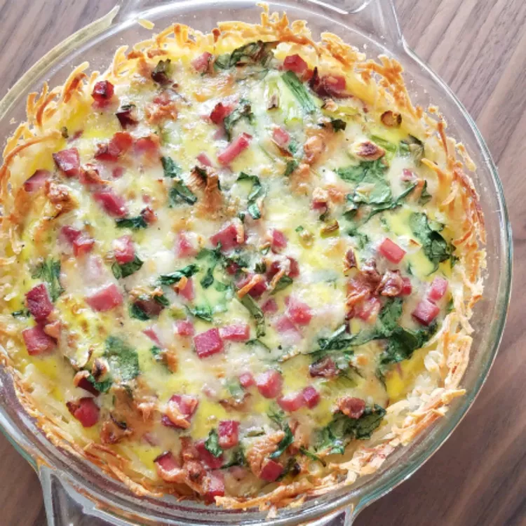

Shredded Potato Quiche

Quiche with crunchy potato crust. A good one dish meal and a great way to use leftovers. You may also use 1 cup chopped vegetables of your choosing, such as onions, peppers, broccoli or tomatoes, etc.
Ingredients
- 1 (16 ounce) package frozen shredded hash brown potatoes, thawed
- ¼ cup butter, melted
- 5 eggs, lightly beaten
- 1 ½ cups shredded Swiss cheese
- 1 cup cooked ham
- ¼ cup milk
- salt and pepper to taste
Steps
- Preheat oven to 375 degrees F (190 degrees C). Lightly grease a 9 inch pie pan.
- Press potatoes into greased pie plate. Brush with melted butter. Bake in preheated oven until lightly browned, about 10 to 15 minutes.
- In a large bowl, stir together beaten eggs, milk, cheese, ham, salt and pepper. Pour egg mixture into baked crust.
- Bake in preheated oven until center is set, about 20 minutes. The quiche will be browned on top and a knife inserted into the center will come out clean.
Return to Homepage